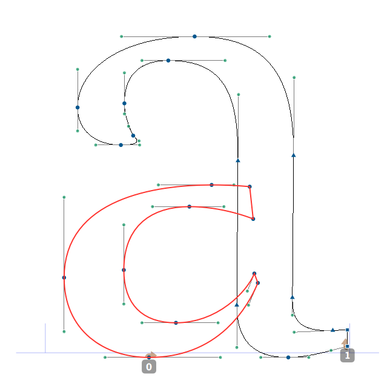
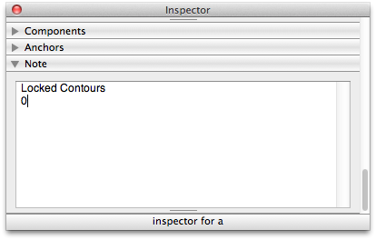

Done with a contour? Or working on a contour and don't want to accidently edit the other contour? Lock it!
Locked contours are not selectable and therefor not editable.
Lock your contours by typing their index number in the glyph note directly under the Locked Contours line, seperated by commas
Locked contours have their own stoke color and/or fill colour.
Get the Locked Contours line by hitting the button in the Settings dialog, or type it by hand...
 